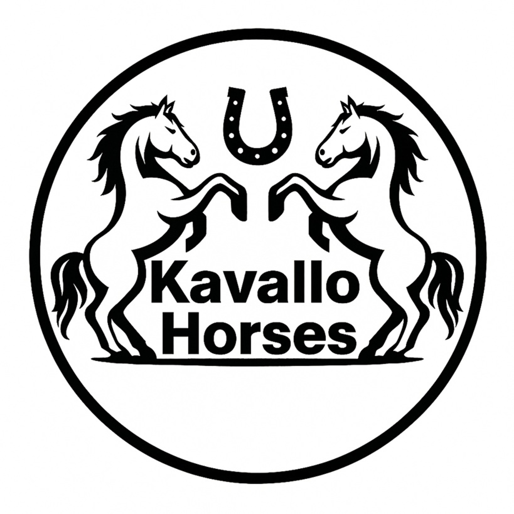

Üdvözlünk a Kavallo Horses világában
Egyedi, kézzel készült lovas kiegészítők – stílus, funkcionalitás és elegancia találkozása.
Fedezd fel a termékeketSzolgáltatások
Versenyre szabott kiegészítők, személyre szabott megrendelés és gyors ügyfélszolgálat.